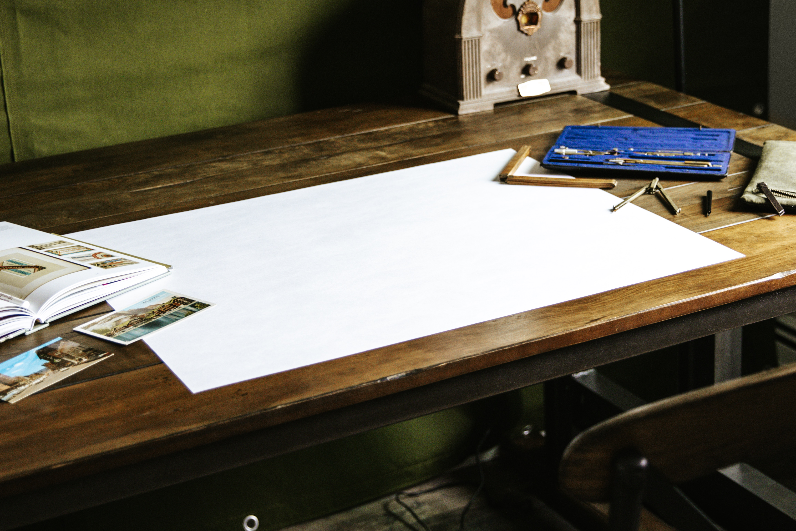
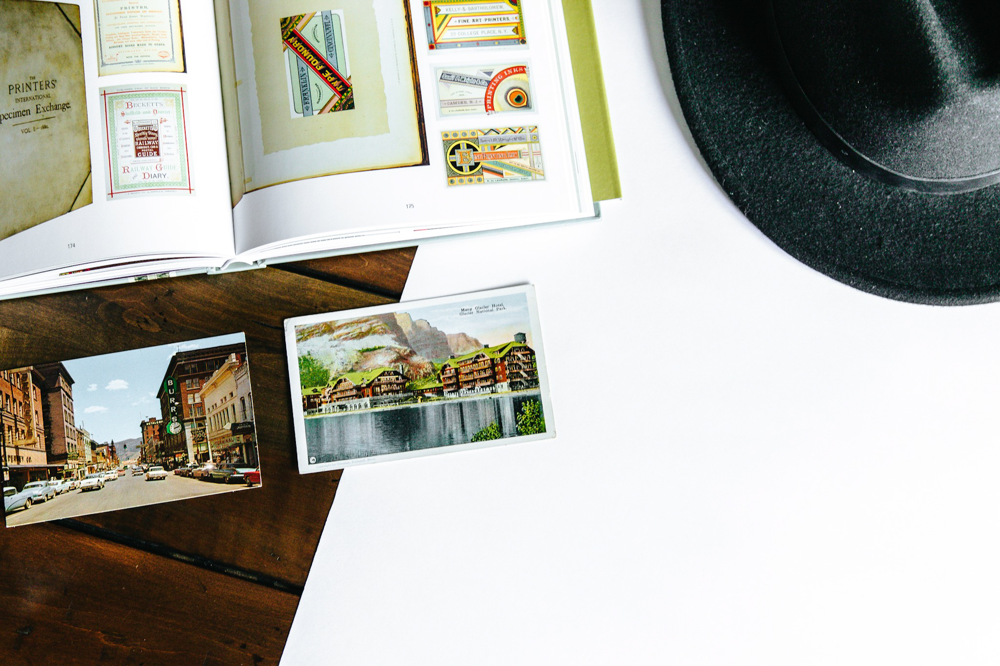

Heading Back to the 1920s

What's wrong with a little classic? For my theme I decided to pick some inspiration from a vintage 1920s style by featuring some old images I took to showcase my design work.

I'm definitely a bit of a fan when it comes to old school tones and styles. This set was taken from a 1920s project I shot with my DSLR.